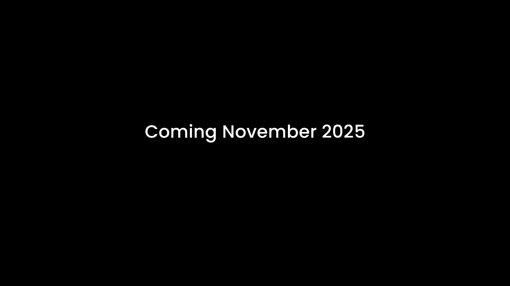

Jonghoon Ahn
Filmmaker · Creative Technologist · Media Artist
Calarts Art&Tech MFA25
2025 Art Korea Lab Co-Project
2024 Finalist Sundance Ignite x Adobe Fellowship
Calarts Art&Tech MFA25
2025 Art Korea Lab Co-Project
2024 Finalist Sundance Ignite x Adobe Fellowship


A young aspiring filmmaker meets someone seemingly superior, which reignites his drive to pursue his dreams. However, overwhelmed by feelings of inferiority and disillusionment, he chooses to end his life. In his final moments, his fading consciousness is reconstructed as a completed film, where unfinished memories loop meaninglessly in an undefined space.

When a high school girl is left alone in her apartment after her stay-at-home father returns to work, her quiet routine unravels into a haunting meditation on absence, loneliness, and the fragile rhythms of family life in the city.

After delivering a eulogy at the funeral of her estranged mother, Jeongeum boards a subway home only to enter a surreal space where time bends and her mother appears once more. In this liminal journey between guilt and grief, can Jeongeum find the courage to forgive?

After losing eight years of memories when a social media account is suddenly erased, a filmmaker retraces past and imagined journeys across Korea—through clouds, coastlines, and silence—to explore how memory, voice, and identity can exist beyond the digital archive.

Three strangers awaken on a drifting raft, with no memory of how they got there. As they share mysterious meat to survive, silence unravels their darkest guilt — and those who try to justify their past begin to vanish, one by one.

A man living a cockroach-like existence accidentally kills someone and checks into a mysterious inn for those planning to die. But in this eerie space where death is expected, what he finds instead may change everything.

When an AI band named BANDAI begins replicating the sound of the beloved group Jannabi, the real band vanishes to protect their identity. A young fan, Jonghoon, builds a robot suit and performs as “Jannabi Boy,” fooling the world — until BANDAI contacts him, threatening to expose his secret unless he sings their AI-generated song instead of his own. Torn between loyalty and survival, he must choose: authenticity or adaptation.

To Eternity is an interactive media art installation commemorating the Gwangju Democratization Movement of May 18, 1980. Archival photographs taken during the 1980 uprising are algorithmically mosaicked in real time over the viewer’s image.

Gang Se-hwang AI Docent is an interactive media installation that digitally revives the historical figure Gang Se-hwang—renowned painter and mentor to Kim Hong-do—as an AI human.

Jemulpo Photo Studio is an interactive media installation that transforms visitors’ portraits into stylized magazine covers inspired by the “New Women” aesthetic of early Jemulpo (modern-day Incheon) during the colonial period.

AI ZOO is a mixed media installation that metaphorically frames artificial intelligence—both as a human creation and a product of technology—within the conceptual space of a "zoo." Inside a large transparent acrylic sphere, balloons of varying sizes represent the diffusion and training models of AI, visualizing its internal learning processes.

Directed By AI is a collaborative film and media installation co-directed by Jonghoon Ahn and an AI system trained to develop narrative structure, characters, and visuals. Based on Ahn’s personal facial data, the project reconstructs his mother and sister as virtual beings, generating a new fictional family.

Silhak Dance is an interactive media installation featuring a digital character of Kim Yuk, a leading scholar of the Silhak (Practical Learning) movement. The virtual Kim Yuk mimics the audience’s body movements in real time, creating a playful and educational dance interaction.

Track 6 is an interactive virtual dance installation where audiences can move freely to six different music tracks while being immersed in geometric graphics. Using a Kinect sensor, the system captures participants’ full-body movements in real time and maps them into a virtual space where the laws of physics are intentionally distorted.

This research-based installation explores the reconstruction of Choi Jung-hoon, the lead vocalist of the Korean band JANNABI, as an AI-generated digital human. Utilizing large language models (LLMs), the system is trained on Choi’s voice, personality traits, appearance, and public data. These elements are integrated into a real-time digital avatar that visually resembles him.

Description of project 1 in Media Art.

Description of project 2 in Media Art.

Description of project 2 in Media Art.

Description of project 3 in Media Art.

Description of project 4 in Media Art.

Description of project 5 in Media Art.

Description of project 6 in Media Art.
Description of project 7 in Media Art.

Description of project 1 in XR.

Description of project 2 in XR.

Description of project 3 in XR.

Description of project 4 in XR.

Description of project 5 in XR.

Description of project 1 in 3D / VFX.

Description of project 2 in 3D / VFX.

Description of project 3 in 3D / VFX.

Description of project 4 in 3D / VFX.

Description of project 5 in 3D / VFX.